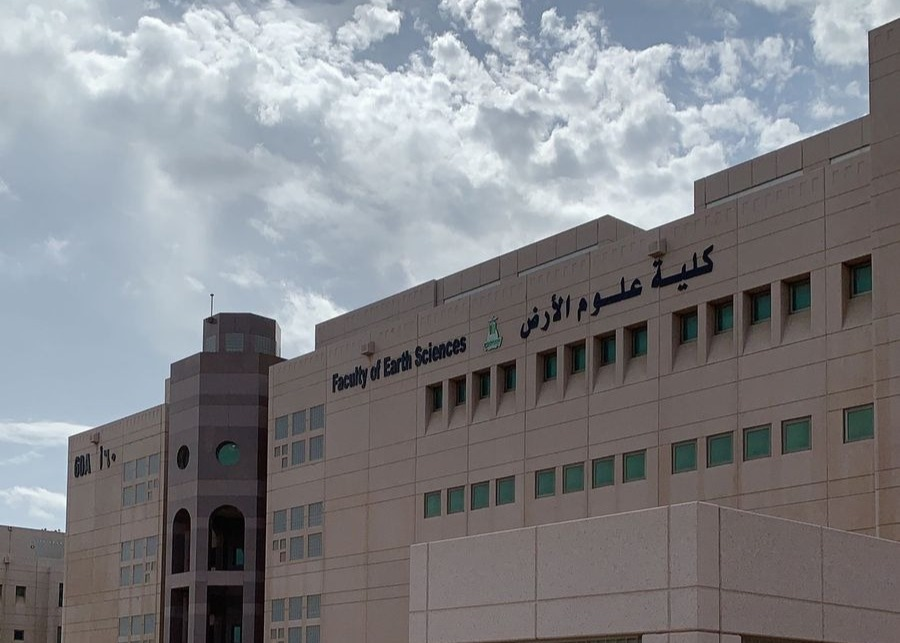

جــامــعــة المـــلك عــبدالـــعزيـــز
كـــليــة عــلوم الأرض
ع/A

أن تصبح كلية علوم الأرض مرجعًا إقليميًا وعالميًا في البحوث والدراسات، وأن تسهم في إعداد كفاءات مؤهلة تلبي احتياجات سوق العمل في مجالات علوم الأرض والتعدين.
إعداد كفاءات علمية ومهنية متميزة في تخصص علوم الأرض لخدمة المجتمع والمملكة من خلال الاستفادة من الموارد الطبيعية للأرض.
تُعد كلية علوم الأرض من أقدم المؤسسات التعليمية المتخصصة في علوم الجيولوجيا التطبيقية بالمملكة العربية السعودية، حيث تأسست عام 1390هـ (1970م) كمركز للجيولوجيا التطبيقية بهدف تأهيل الجيولوجيين السعوديين في مجالات الجيولوجيا الحقلية واستكشاف الثروات المعدنية. وانضمت لاحقًا إلى جامعة الملك عبدالعزيز لتصبح كلية علوم الأرض عام 1398هـ (1978م). وتتميز الكلية ببرامجها الأكاديمية المتطورة ومكانتها العلمية المرموقة، إذ كانت من أوائل الكليات في المملكة التي طرحت برامج الماجستير والدكتوراه. كما تنفرد على مستوى المملكة والعالم العربي بتقديم برامج البكالوريوس في عدد من التخصصات التطبيقية في علوم الأرض، مما يسهم في إعداد كوادر وطنية مؤهلة لدعم التنمية المستدامة وتحقيق مستهدفات رؤية المملكة 2030.
تُعد علوم الأرض من التخصصات الحيوية التي تجمع بين المعرفة العلمية والتطبيقات العملية، وتسهم بشكل مباشر في فهم كوكب الأرض واستكشاف موارده الطبيعية وإدارتها بما يحقق التنمية المستدامة. كما تلعب دورًا محوريًا في دعم القطاعات الاستراتيجية التي تسهم في تحقيق مستهدفات رؤية المملكة العربية السعودية 2030.
توفر علوم الأرض مجموعة واسعة من التخصصات التي تلبي مختلف الاهتمامات العلمية والتطبيقية، مثل التعدين، المياه الجوفية، الجيوفيزياء، البترول، والاستشعار عن بعد.
يتمتع خريجو علوم الأرض بفرص وظيفية متميزة في قطاعات التعدين والطاقة والمياه والبيئة والهندسة، في القطاعين الحكومي والخاص.
يسهم التخصص في تحقيق مستهدفات رؤية المملكة 2030 من خلال دعم قطاع التعدين واستدامة الموارد الطبيعية وتعزيز التنمية الاقتصادية.
يعتمد التخصص على تقنيات متقدمة مثل نظم المعلومات الجغرافية (GIS) والاستشعار عن بعد والتحليل الرقمي، بما يواكب التطورات العلمية الحديثة.
يجمع التخصص بين العمل الميداني والدراسة المعملية والبحث العلمي، مما يمنح الطلبة خبرات عملية ومهارات تطبيقية متميزة.
يتيح التخصص فرصًا واسعة لاستكمال الدراسات العليا والتخصص الدقيق في العديد من المجالات العلمية والتطبيقية محليًا ودوليًا.